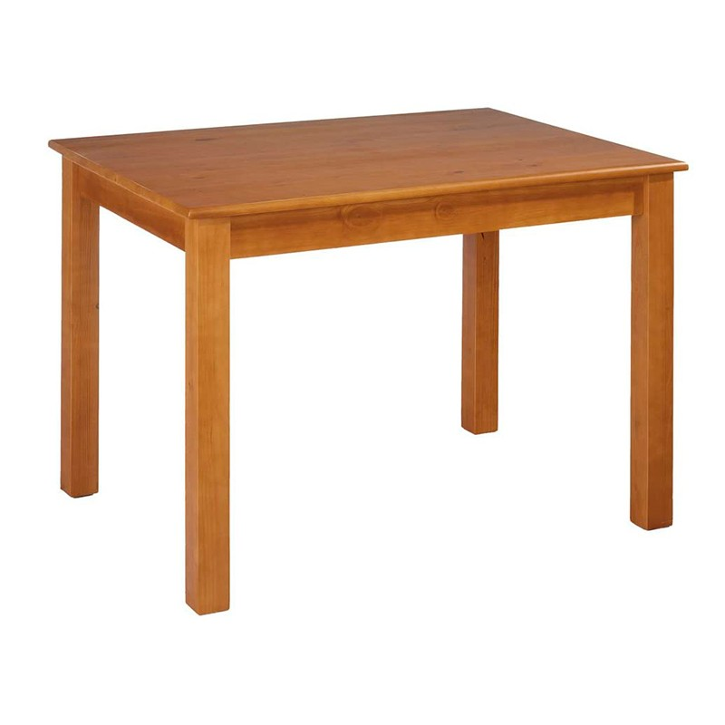
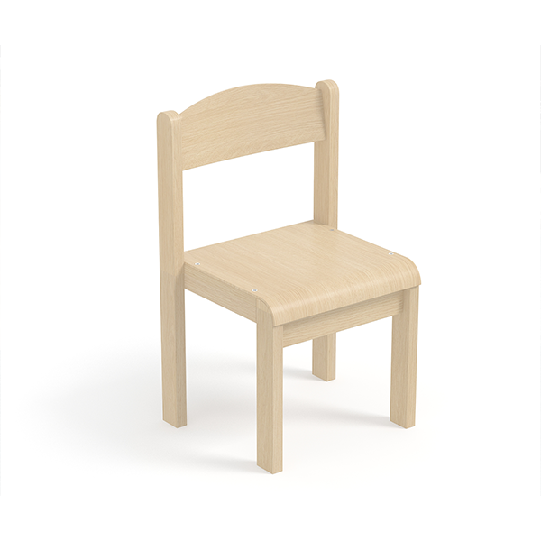

Abans de veure què és el bootstrap, hem d'entendre el concepte d'una llibreria, que seria un conjunt de codi creat per a ser compartit i que molta gent el fagi servir
La llibreria més famosa de css és el Bootsrap, adjuntat a aquesta pàgina per a que es pugui veure de què és capaç, mira el botó d'abaix com a exemple
Aquest botó està estilat fent servir codi del bootstrap, lo únic que hem fet ha sigut aplicar la classe corresponent
El disseny responsiu és l'idea d'adaptar el disseny de la web al tamany de la pantalla, es suporta sobretot amb 3 subidees
Els breakpoints serien punts dels media queries en els quals la web passa d'un estil a un altre
Per a crear una web senzilla amb el Bootstrap, hem de fer un doc html que tingui com a referència l'arxiu de bootstrap, ja sigi local o online
A continuació, hem de fer servir les classes ja definides al bootstrap creant elements amb aquestes classes(com container, row, column...), mira l'exemple
Taula
Una cosa plana, 4 potes
Cadira
Dues coses planes, 4 potes
| Taula | 100€ |
| Cadira | 25€ |
Hi ha classes del bootstrap dissenyades per a afectar segons disseny responsiu, seguirien aquest criteri
| Punt | Nom de classe | Tamany |
|---|---|---|
| Extra petit | xs(per defecte) | més petit que 576px |
| Petit | sm | entre 576px i 767px |
| Mitjà | md | entre 768px i 991px |
| Gran | lg | entre 992px i 1199px |
| Extra gran | xl | entre 1200px i 1399px |
| Extra extra gran | xxl | més gran que 1399px |
Aquests noms de classes de la taula s'apliquen a les classes seguins aquest exemple: col-sm-4. Després mirem què seria aquest 4
El boostrap també té uns colors per defecte depenent de la classe que indiquem. Aquests són anomenars modificadors, i són aquests: primary, secondary, success, info, warning, danger, light i dark. ara veurem un div amb un d'aquests modificadors
Imagina la plana com un conjunt de 12 columnes. El sistema gri del boostrap fa que certes classes agafin cert número de columnes segons necessitat
Seguint l'exemple d'abans, el col-sm-4, faria que la clase agafés 4 columnes de les 12 en les que hem dividit la web amb el sistena grid
Per a fer-ho servir, hem de fer primer un div de la classe "container", un altre div a dins amb la classe "row" i al div dins d'aquest ja podem aplicar la classe que utilitza el grid
Un exemple molt bo de com funcionaria, seria el contingut de Noms i preus que has vist abans a la web, si la fas més estreta, el contingut canvia de posició
Podem fer que un div sigui vist com una tarjeta a la web fent servir el conjunt de classes "card" del bootstrap. S'ha de posar la class "card" al div que contingui les coses que volem dins la tarjeta i les classes "card-body", "card-title" i "card-text" on convingui
A continuació tens l'enllaç on pots consultar tota la documentació del bootstrap:
Enllaç a documentació del bootstrapAquí pots mirar tot el que té el bootstrap fàcilment
A part del bootstrap, hi ha altres llibreries de css que es poden utilitzar: